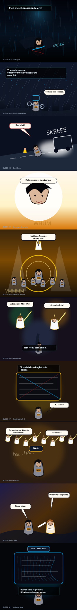

PILOTO VISUAL
CAPÍTULO 1
Cicatrizário do Abismo
Webtoon vertical — primeiros 10 blocos em produção
Fallback visual em SVG/HTML porque o gerador oficial de imagem está sem FAL_KEY. A composição, balões, continuidade, paleta e leitura mobile já estão montadas para produção.
